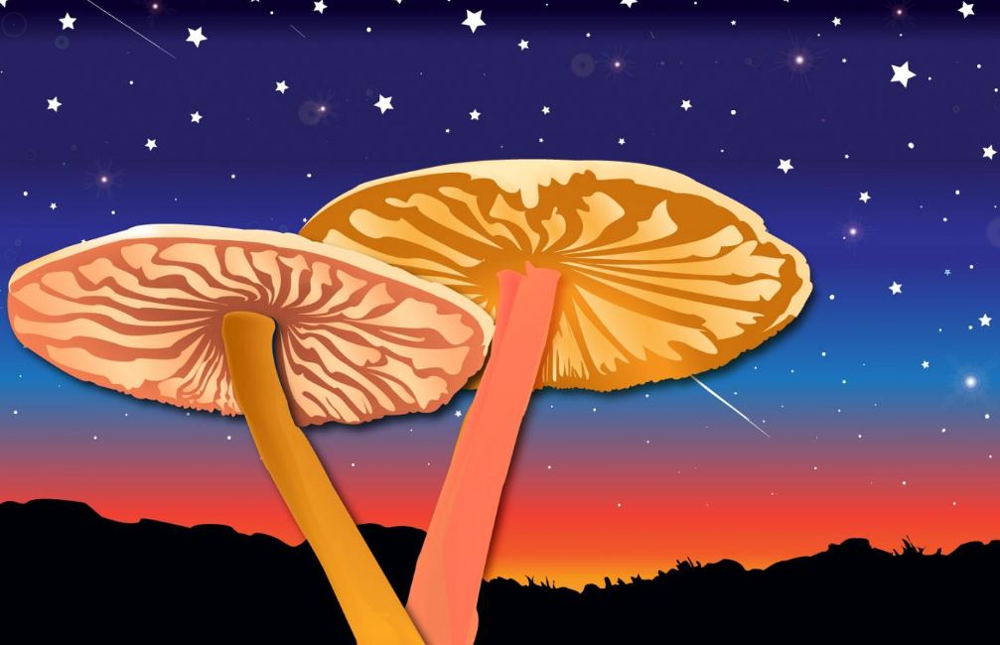
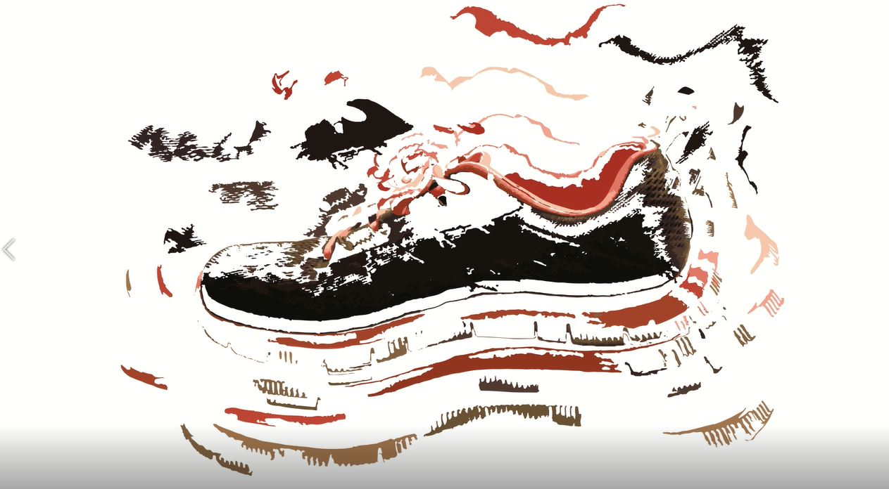
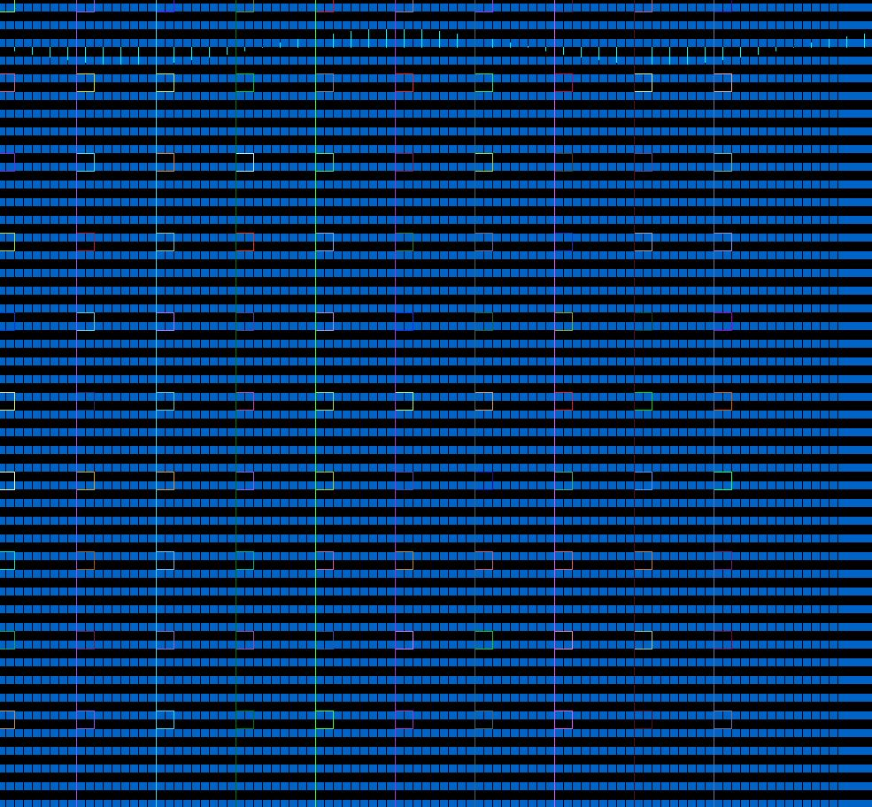
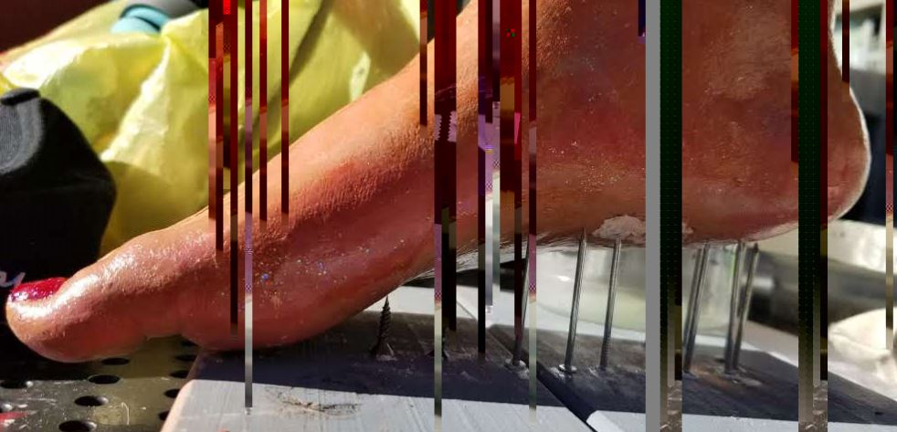
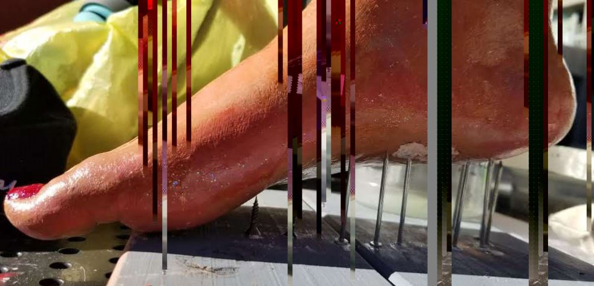
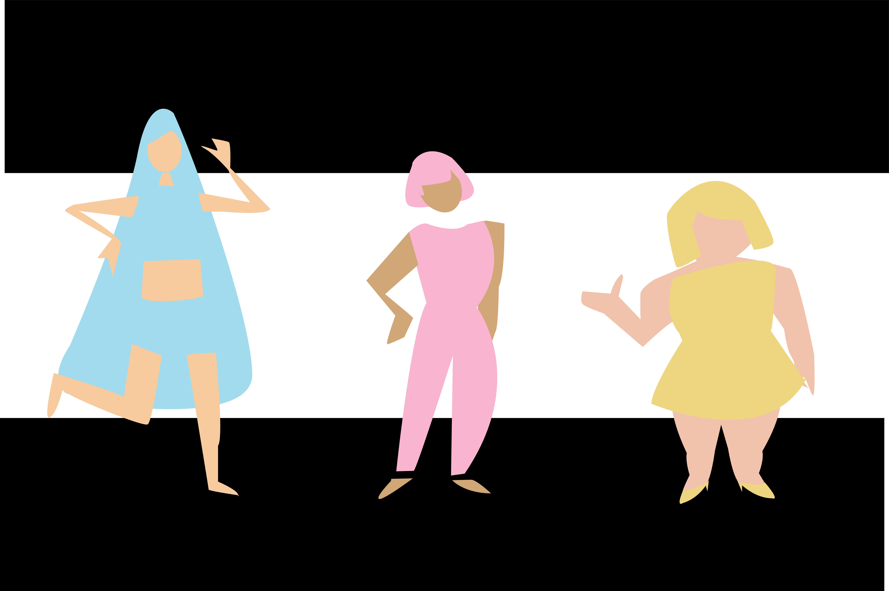

Sabrina Kwong BFA Portfolio Website
"There are many possibilities to understand more in the unknown."
Artist Statement
As someone who has lived outside of the United States at a young age for a long period of time and then coming back here, I have experienced another culture and language that gives me a different way at looking at things. I want to continue my studies in art and technology in order to further share my story as well as the story of others in order to create empathy and an understanding of relative social issues.
I believe the tools I can learn from DMA will help me reach that goal and my goal of teaching others to do the same. I create art as a means of self-healing and to further understand topics I am interested in or find challenging to understand.
Through this interest of self-care and awareness of one’s physical body, I have leaned towards creating artwork of understanding my past, how a body moves through space and creating perspective through narratives. My belief towards art is that it should not only be for aesthetic reasons but for a cause, a belief worth contributing to and a way to make others think.
I hope to create creative work in all form of mediums that is demanded by the work field and hope to become a become better communicator, whether through a screen or in person.
Piece no.1

"Mediation", Illustration, Adpbe Illustrator, 2015
One of my first illustration pieces I created in illustrator, I wanted to convey a mushroom, a symbol of the looking at the past in the third person.
Piece no.2
"Different Coordinates", Net Art, 2018
This net art piece is a narrative to my experience of living in a different country(China) and not knowing the language.
Piece no.3
"Thump", Video, Illustration and Afteraffects, 2019
I created this piece with the mind of having projected as a loop on a large projector. I wanted to communicate the feeling of walking through how I feel when I do not walk. I find my body struggling to handle stress and a bit anxious where walking or movement helps balance the chemicals in my brain and found also good for physical health. Therefore, in this piece, I hope to communicate the seperation of the shoe and the sound of a heartbeat as a map in haveing purpose in moving.
Piece no.4
"Stella and a Flower", Stop Motion, Adobe Premiere, 2017
This is my first stop motion narrative piece titled "Stella and the Flower". It is the story of a picture frame that wants to help a fellow plant besides it.
Piece no.5
"Follow", Videoart, AdobePremiere, 2018
"Follow" is a video art piece that digs into what it is like being followed and recorded, whether it is being 'followed' online and social media or in person, what is one's reaction and thoughts to the act of recording? How do people respond to watching someone being recorded? Has it been so normal that we are so comfortable with every moment of it and what are the circumstances one finds it to be inappropriate?
Piece no.6
"Info", Video of Processing, Processing, 2019
This my exploration of creative code as a being new to the Processing language. I really enojyed understanding different commands through trial and error. This piece is called "Info" through my experience of creating this piece becuase of my experience of learning how to create this piece.
Piece no.7
"Convergence Through Movement", Videoart, AdobePremiere, 2018
In a reflective way, “Convergence Through Movement” explores movement through dance. Inspired by other works of video that express similarities, this piece hopes to provide beauty in expressing oneself through one’s relationship with one’s body. Where all our movements are tied to the embodiment of oneself, why should we not understand the extension of what our bodies are capable of doing: dancing
Piece no.8
 

"Beyond Your Feet", glitch art, notepad++ (on the left) and Audacity and Photoshop (on the right), 2019
I wanted the photos to represent pain and restriction with fluidity, feeling present, and freedom. The question or thought I want to address with these two photos would then be what is restricting us from moving and being free? What pains the very feet we stand on (for instance, a hairstylist who stands many hours a day compared to someone who sits for many hours a day)? What would we need to be truly free?
Piece no.9
"We are different", illustration/animation, Adobe Illustrator and AdobeAfter Affects, 2019
I was part of the Gender Equity Center's Gender and Body Positivity Art Gallery and brough one goache painting and this digital video piece that were projected on two screens. My video piece was played as a loop in a beat that played with the background music. This is an ongoing piece of different women and their body types. Accepting them through the use of light colors as we all journey into the big world.
Piece no.10

"Spread the Love", Meme, Photshop and Illustrator, 2019
I mashed up a meme in my art 75 class that aimed towards positivity and wholesomness. I created with Fred Rogers, Kermit the frog, hearts, and the cutie pie memes and images in mind to create a meme that I can share and give a smile for someone else's day.